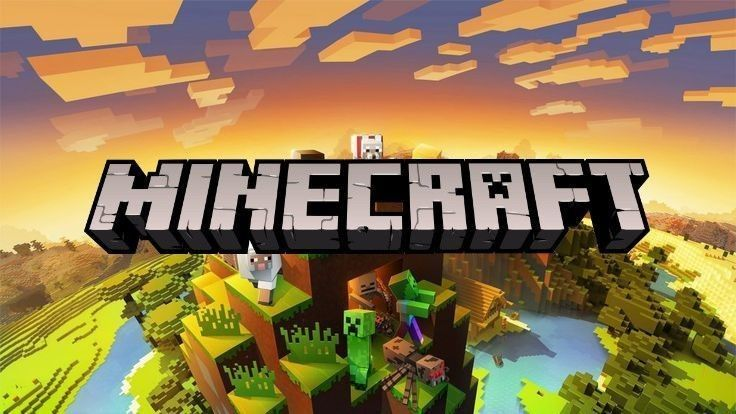
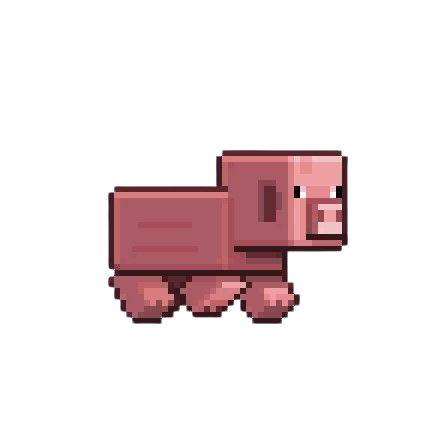

Páginas
Pag 1:Dimenciones
Pag 2: Estruccturas
Pag 3: Moustros Pasivos
Pag 3: Moustros hostiles
Referencias bibliograficas

click aqui
Minecraft Minecraft es un videojuego de construcción y aventuras desarrollado por Mojang Studios. El jugador puede explorar mundos infinitos y construir desde simples casas hasta grandiosas fortalezas
pMinecraft comenzó como un proyecto independiente de Notch, inspirado por juegos como Dwarf Fortress, Infiniminer y Dungeon Keeper. El 17 de mayo de 2009, se lanzó una versión inicial llamada "Cave Game", que poco después se renombró a Minecraft. La versión Alfa ganó rápidamente popularidad entre los jugadores por su enfoque en la creatividad y la exploración.
Minecraft pasó por una etapa Beta en 2010, durante la cual se introdujeron elementos icónicos como los biomas, el Nether, y la Redstone. En 2011, el juego se lanzó oficialmente para PC en la Minecon, un evento dedicado a la comunidad de jugadores. Minecraft ya era un fenómeno global gracias al boca a boca y la creciente comunidad de jugadores y creadores de contenido en plataformas como YouTube.
Minecraft permite a los jugadores explorar un mundo tridimensional generado proceduralmente compuesto por bloques cúbicos. En este mundo, pueden recolectar recursos, construir estructuras, interactuar con criaturas (llamadas mobs) y enfrentarse a desafíos. El juego tiene múltiples modos, como: Modo Supervivencia: Los jugadores deben recolectar recursos, gestionar su salud y alimentos mientras sobreviven a ataques de criaturas hostiles. Modo Creativo: Ofrece acceso ilimitado a recursos y herramientas, permitiendo construir sin limitaciones. Modo Aventura: Diseñado para jugar mapas creados por otros usuarios con reglas específicas. Modo Espectador: Permite observar el mundo sin interactuar con él. Modo Hardcore: Similar al de supervivencia, pero con mayor dificultad y muerte permanente.
Minecraft tiene múltiples aplicaciones y beneficios: Entretenimiento: Es principalmente un juego que fomenta la creatividad, la exploración y la experimentación. Educación: Ha sido adoptado en entornos educativos para enseñar matemáticas, programación, historia y trabajo en equipo mediante versiones como Minecraft: Education Edition. Desarrollo de habilidades: Ayuda a desarrollar habilidades como resolución de problemas, creatividad, colaboración y pensamiento estratégico. Comunicación y comunidad: Minecraft permite a los jugadores conectarse y colaborar en proyectos masivos en servidores multijugador. Espacio creativo: Es usado por artistas y arquitectos para modelar y visualizar diseños. Minecraft es conocido por su impacto cultural y su capacidad para inspirar creatividad en jugadores de todas las edades.